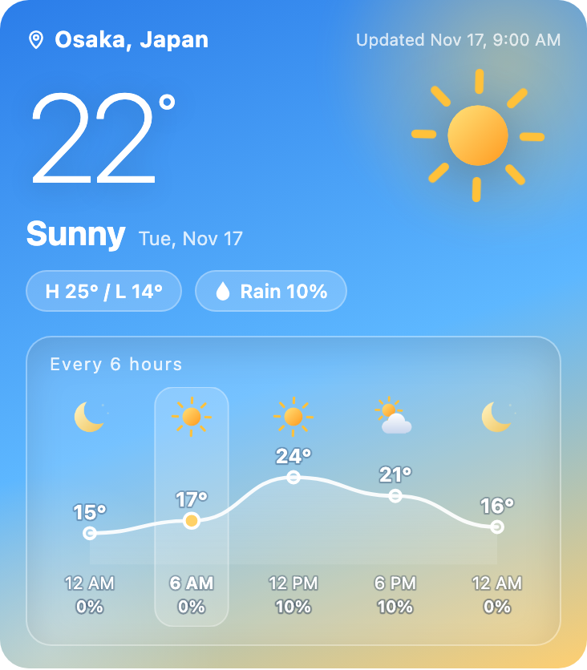
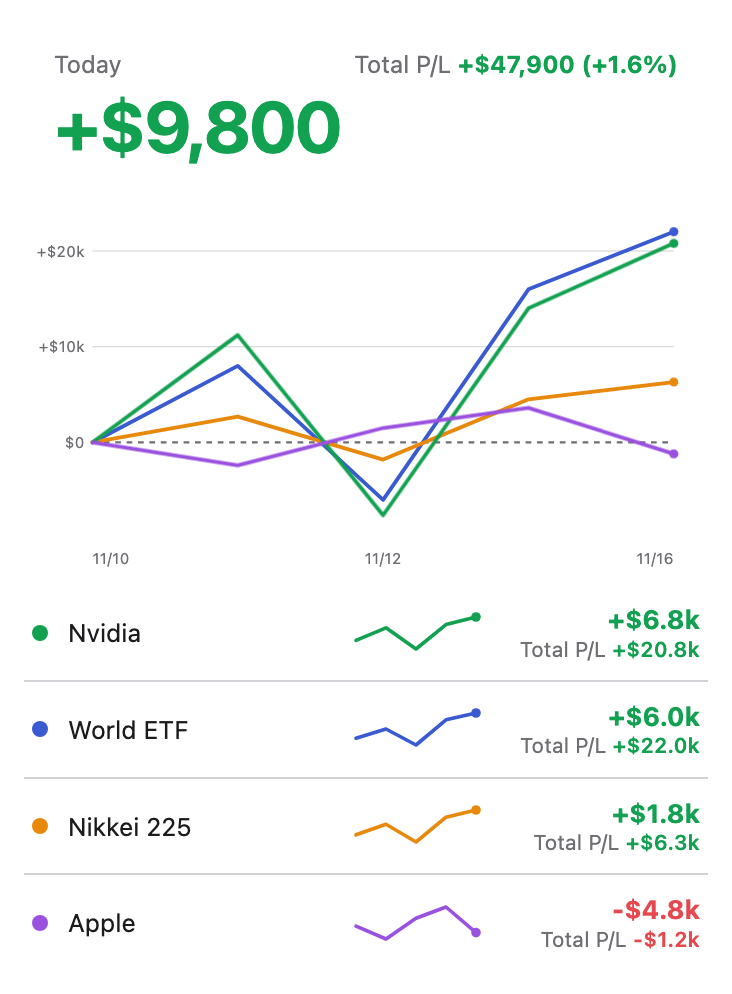
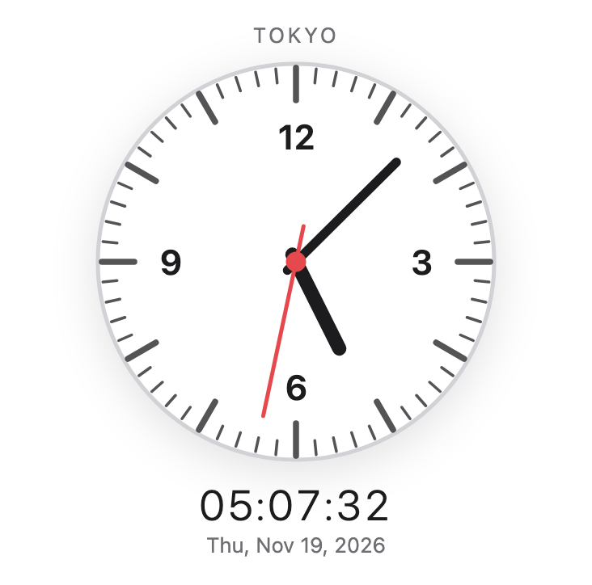
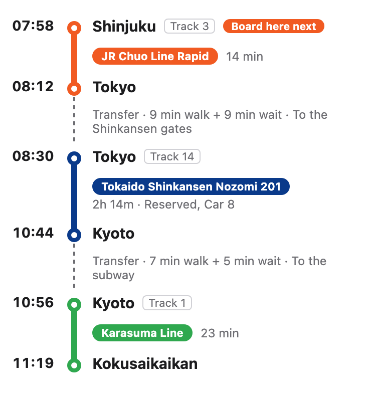

Your Muse chats,now with widgets.
Weather, transit directions, charts, quizzes and more.
Widgets that run right inside Muse’s chat bubbles.
Install with a single prompt!
Register the widgets from miwidgets.com/register.txt
- Copy the prompt
- Paste it into a Muse chat and send
- Then just ask, “Show tomorrow’s weather in London as a widget”
- Free
- Open source (MIT)
- Source on GitHub




One small addition to every conversation.
Just send “Register the widgets from miwidgets.com/register.txt”.